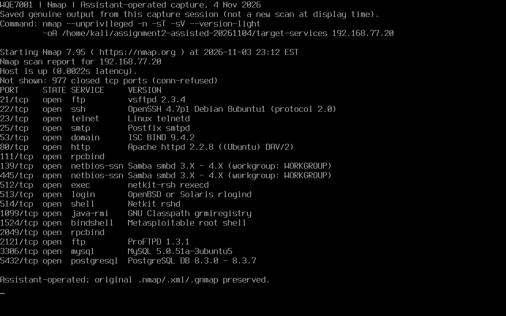
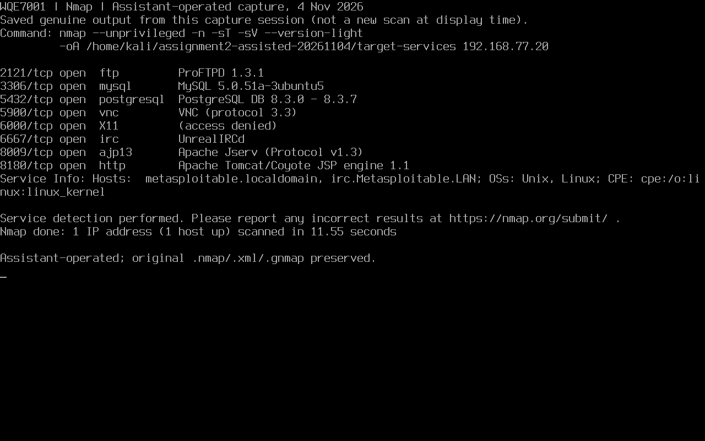

Focus: TCP service discovery, evidence interpretation and follow-up planning
Target: owned Metasploitable 2 guest, 192.168.77.20
Recorded tool: Nmap 7.95 · Refresh date: 4 November 2026
Objective
Identify the target's exposed TCP services inside the isolated lab. Explain what the scan establishes, where service identification is uncertain, and which observations could guide a later application security review. This was a discovery exercise, not an exploitation test.
The virtual lab project documents the environment and isolation checks. Both projects use the same two owned or controlled guests, but answer different questions.
Environment and tools
| Item | Recorded value |
|---|---|
| Test workstation | Kali Linux, 192.168.77.10/24 |
| Target | Metasploitable 2, 192.168.77.20/24 |
| Network | VMware private LAN Segment WQE7001-AppSec |
| Tool | Nmap 7.95 |
| Scope | One target, the default 1,000 common TCP ports |
| Exclusions | UDP, a full TCP-port scan and exploitation |
Method
- Confirm the target identity, private address and isolated network configuration. Do not replace the target with a public address.
- Use a TCP connect scan with DNS disabled and light service detection. Save the results so they can be reviewed after the run.
- Compare the saved text with the output captures. Count the open and closed ports and retain the original service labels.
- Group the services by purpose. Separate an exposed listener, a probable product identity and a confirmed vulnerability.
- Record follow-up checks as future work. Do not report a repair or successful exploit that was not performed.
The intended invocation recorded for the 4 November run was:
nmap --unprivileged -n -sT -sV --version-light \
-oA /home/kali/assignment2-assisted-20261104/target-services \
192.168.77.20--unprivileged avoids raw-socket scan privileges; -n disables DNS; -sT selects TCP connect scanning; -sV asks for service identification; --version-light reduces the probe intensity; -oA saves the normal, XML and grepable formats. The raw normal-output header also records Nmap's launcher argument --privileged before --unprivileged; it is preserved in the original log rather than edited out.
Results
The recorded run checked 1,000 common TCP ports. It found 23 open and 977 closed, and completed in 11.55 seconds. Host discovery reported one reachable target. These values describe this saved run, not a new measurement made while building the portfolio.
The log starts at 23:12 EST on 3 November, which corresponds to 04:12 UTC and 12:12 UTC+8 on 4 November. The screenshot display is a later view of that same saved output.
| Evidence | Collection method |
|---|---|
| Original normal output | Byte-preserved result of the assistant-operated 4 November run |
| Output capture, first segment | Assistant-operated display of the saved output; label retained |
| Output capture, completion | Continuation of the same saved scan, not a second scan |
| All open ports and follow-up notes | Editable interpretation table based on the saved output |
| Machine-readable summary | Recorded scope, counts, duration and collection notes |
| Evidence manifest | File hashes and publication notes |


Interpretation
Ports 80 and 8180 provide separate HTTP entry points. Port 8009 was identified as an application-server connector. In a later AppSec review, I would inspect the applications exposed through these services and check which clients may use the connector. Database listeners on 3306 and 5432 would also need a review of allowed clients and account permissions.
The legacy remote-access services need careful access review in any real deployment. However, this deliberately vulnerable training target was not being assessed as a production system. An open port alone does not show that an account, request or exploit succeeded.
Two labels require particular care. Port 2049 was reported as rpcbind, so I retain that observation rather than substituting NFS from the usual port-number association. Port 513 was tentatively identified as OpenBSD or Solaris rlogind without an exact version. The root-shell label on 1524 was not checked through a separate exploitation attempt.
Limitations and improvements
Light service detection can leave identities uncertain. This scan did not cover every TCP port or any UDP services. It also did not examine application authorization, source code or dependency use.
For the next owned application exercise, I would use the discovery results to choose one HTTP entry point, trace a request, validate a weakness, apply a code repair and retest both allowed and denied behavior. The evidence should make it possible to see what changed. A scanner label would remain a starting point for investigation.
Contribution and scope
Gong Bingyan confirmed personal reproduction and understanding of the lab checks and scan on 2 November 2026. The refreshed run and its output captures on 4 November were operated with Codex assistance. The portfolio retains this distinction. No third-party target was scanned for this website.
References
- Nmap: TCP connect scan and other scan techniques
- Nmap: service and version detection
- Nmap: output formats
Read the web version · Return to the portfolio
All 23 observed open ports
Open the full service record and follow-up notes
| TCP port | Observed service / version | Meaning and follow-up |
|---|---|---|
| 21 | ftp; vsftpd 2.3.4 | FTP file transfer; check authentication, transport protection and patch status. |
| 22 | ssh; OpenSSH 4.7p1 Debian 8ubuntu1 (protocol 2.0) | SSH remote administration; review authentication and supported algorithms. |
| 23 | telnet; Linux telnetd | Telnet terminal access; credentials and session traffic may be sent in clear text. |
| 25 | smtp; Postfix smtpd | SMTP mail service; check relay controls and whether this exposure is necessary. |
| 53 | domain; ISC BIND 9.4.2 | DNS over TCP; DNS over UDP was outside this scan. Review allowed clients. |
| 80 | http; Apache httpd 2.2.8 ((Ubuntu) DAV/2) | HTTP web service; a separate 31 October check reached DVWA on this owned host. |
| 111 | rpcbind; version not identified | RPC service registration; it can reveal other RPC services to a client. |
| 139 | netbios-ssn; Samba smbd 3.X - 4.X (workgroup: WORKGROUP) | Samba/NetBIOS service; review share permissions and authentication. |
| 445 | netbios-ssn; Samba smbd 3.X - 4.X (workgroup: WORKGROUP) | Samba service as reported; review SMB exposure and access controls. |
| 512 | exec; netkit-rsh rexecd | Legacy remote execution service; review its authentication and necessity. |
| 513 | login; OpenBSD or Solaris rlogind | Tentative remote-login product label; the exact daemon and version require validation. |
| 514 | shell; Netkit rshd | Legacy remote shell service; review trust-based authentication and exposure. |
| 1099 | java-rmi; GNU Classpath grmiregistry | Java RMI registry; review remote-object exposure and application configuration. |
| 1524 | bindshell; Metasploitable root shell | Reported as a Metasploitable root shell; no separate exploitation test was run. |
| 2049 | rpcbind; version not identified | Reported as rpcbind by this light scan. Confirm RPC/NFS identity separately. |
| 2121 | ftp; ProFTPD 1.3.1 | A second FTP server was identified; check the need for parallel file services. |
| 3306 | mysql; MySQL 5.0.51a-3ubuntu5 | MySQL database listener; review client restrictions and account permissions. |
| 5432 | postgresql; PostgreSQL DB 8.3.0 - 8.3.7 | PostgreSQL listener; review host-based access and database permissions. |
| 5900 | vnc; VNC (protocol 3.3) | VNC remote desktop; review authentication and access to the display. |
| 6000 | X11; (access denied) | X11 display service; the version probe reported access denied. |
| 6667 | irc; UnrealIRCd | IRC server; determine whether the application requires this service. |
| 8009 | ajp13; Apache Jserv (Protocol v1.3) | AJP application-server connector; restrict which front ends may connect. |
| 8180 | http; Apache Tomcat/Coyote JSP engine 1.1 | Additional HTTP service identified as Tomcat/Coyote; review app access. |
Evidence gallery

